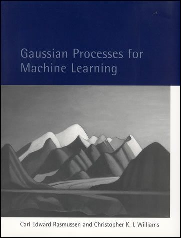

Figure: A key reference for Gaussian process models remains the excellent book “Gaussian Processes for Machine Learning” (Rasmussen and Williams (2006)). The book is also freely available online.
[edit]
First we download some libraries and files to support the notebook.
urllib.request.urlretrieve('https://raw.githubusercontent.com/lawrennd/talks/gh-pages/mlai.py','mlai.py')urllib.request.urlretrieve('https://raw.githubusercontent.com/lawrennd/talks/gh-pages/teaching_plots.py','teaching_plots.py')urllib.request.urlretrieve('https://raw.githubusercontent.com/lawrennd/talks/gh-pages/gp_tutorial.py','gp_tutorial.py')[edit]
In Sheffield we created a suite of software tools for ‘Open Data Science’. Open data science is an approach to sharing code, models and data that should make it easier for companies, health professionals and scientists to gain access to data science techniques.
You can also check this blog post on Open Data Science.
The software can be installed using
from the command prompt where you can access your python installation.
The code is also available on github: https://github.com/sods/ods
Once pods is installed, it can be imported in the usual manner.
Figure: A key reference for Gaussian process models remains the excellent book “Gaussian Processes for Machine Learning” (Rasmussen and Williams (2006)). The book is also freely available online.
Rasmussen and Williams (2006) is still one of the most important references on Gaussian process models. It is available freely online.
[edit]
Models where we model the entire joint distribution of our training data, $p(\dataVector, \inputMatrix)$ are sometimes described as generative models. Because we can use sampling to generate data sets that represent all our assumptions. However, as we discussed in the sessions on and , this can be a bad idea, because if our assumptions are wrong then we can make poor predictions. We can try to make more complex assumptions about data to alleviate the problem, but then this typically leads to challenges for tractable application of the sum and rules of probability that are needed to compute the relevant marginal and conditional densities. If we know the form of the question we wish to answer then we typically try and represent that directly, through $p(\dataVector|\inputMatrix)$. In practice, we also have been making assumptions of conditional independence given the model parameters,
$$
p(\dataVector|\inputMatrix, \mappingVector) =
\prod_{i=1}^{\numData} p(\dataScalar_i | \inputVector_i, \mappingVector)
$$
Gaussian processes are not normally considered to be generative models, but we will be much more interested in the principles of conditioning in Gaussian processes because we will use conditioning to make predictions between our test and training data. We will avoid the data conditional indpendence assumption in favour of a richer assumption about the data, in a Gaussian process we assume data is jointly Gaussian with a particular mean and covariance,
$$
\dataVector|\inputMatrix \sim \gaussianSamp{\mathbf{m}(\inputMatrix)}{\kernelMatrix(\inputMatrix)},
$$
where the conditioning is on the inputs $\inputMatrix$ which are used for computing the mean and covariance. For this reason they are known as mean and covariance functions.
[edit]
The Gaussian density has many important properties, but for the moment we’ll review two of them.
If we assume that a variable, $\dataScalar_i$, is sampled from a Gaussian density,
$$\dataScalar_i \sim \gaussianSamp{\meanScalar_i}{\sigma_i^2}$$
Then we can show that the sum of a set of variables, each drawn independently from such a density is also distributed as Gaussian. The mean of the resulting density is the sum of the means, and the variance is the sum of the variances,
$$
\sum_{i=1}^{\numData} \dataScalar_i \sim \gaussianSamp{\sum_{i=1}^\numData \meanScalar_i}{\sum_{i=1}^\numData \sigma_i^2}
$$
Since we are very familiar with the Gaussian density and its properties, it is not immediately apparent how unusual this is. Most random variables, when you add them together, change the family of density they are drawn from. For example, the Gaussian is exceptional in this regard. Indeed, other random variables, if they are independently drawn and summed together tend to a Gaussian density. That is the central limit theorem which is a major justification for the use of a Gaussian density.
Less unusual is the scaling property of a Gaussian density. If a variable, $\dataScalar$, is sampled from a Gaussian density,
$$\dataScalar \sim \gaussianSamp{\meanScalar}{\sigma^2}$$
and we choose to scale that variable by a deterministic value, $\mappingScalar$, then the scaled variable is distributed as
$$\mappingScalar \dataScalar \sim \gaussianSamp{\mappingScalar\meanScalar}{\mappingScalar^2 \sigma^2}.$$
Unlike the summing properties, where adding two or more random variables independently sampled from a family of densitites typically brings the summed variable outside that family, scaling many densities leaves the distribution of that variable in the same family of densities. Indeed, many densities include a scale parameter (e.g. the Gamma density) which is purely for this purpose. In the Gaussian the standard deviation, $\dataStd$, is the scale parameter. To see why this makes sense, let’s consider,
$$z \sim \gaussianSamp{0}{1},$$
then if we scale by $\dataStd$ so we have, $\dataScalar=\dataStd z$, we can write,
$$\dataScalar =\dataStd z \sim \gaussianSamp{0}{\dataStd^2}$$
[edit]
Consider the distribution of height (in meters) of an adult male human population. We will approximate the marginal density of heights as a Gaussian density with mean given by 1.7m and a standard deviation of 0.15m, implying a variance of $\dataStd^2=0.0225$,
$$
p(h) \sim \gaussianSamp{1.7}{0.0225}.
$$
Similarly, we assume that weights of the population are distributed a Gaussian density with a mean of 75kg and a standard deviation of 6kg (implying a variance of 36),
$$
p(w) \sim \gaussianSamp{75}{36}.
$$
Figure: Gaussian distributions for height and weight.
First of all, we make an independence assumption, we assume that height and weight are independent. The definition of probabilistic independence is that the joint density, p(w, h), factorizes into its marginal densities,
p(w, h) = p(w)p(h).
Given this assumption we can sample from the joint distribution by independently sampling weights and heights.
Figure: Samples from independent Gaussian variables that might represent heights and weights.
In reality height and weight are not independent. Taller people tend on average to be heavier, and heavier people are likely to be taller. This is reflected by the body mass index. A ratio suggested by one of the fathers of statistics, Adolphe Quetelet. Quetelet was interested in the notion of the average man and collected various statistics about people. He defined the BMI to be,
$$
\text{BMI} = \frac{w}{h^2}
$$
To deal with this dependence we now introduce the notion of correlation to the multivariate Gaussian density.
[edit]
[edit]
p(w, h) = p(w)p(h)
$$
p(w, h) = \frac{1}{\sqrt{2\pi \dataStd_1^2}\sqrt{2\pi\dataStd_2^2}} \exp\left(-\frac{1}{2}\left(\frac{(w-\meanScalar_1)^2}{\dataStd_1^2} + \frac{(h-\meanScalar_2)^2}{\dataStd_2^2}\right)\right)
$$
$$
p(w, h) = \frac{1}{\sqrt{2\pi\dataStd_1^22\pi\dataStd_2^2}} \exp\left(-\frac{1}{2}\left(\begin{bmatrix}w \\ h\end{bmatrix} - \begin{bmatrix}\meanScalar_1 \\ \meanScalar_2\end{bmatrix}\right)^\top\begin{bmatrix}\dataStd_1^2& 0\\0&\dataStd_2^2\end{bmatrix}^{-1}\left(\begin{bmatrix}w \\ h\end{bmatrix} - \begin{bmatrix}\meanScalar_1 \\ \meanScalar_2\end{bmatrix}\right)\right)
$$
$$
p(\dataVector) = \frac{1}{\det{2\pi \mathbf{D}}^{\frac{1}{2}}} \exp\left(-\frac{1}{2}(\dataVector - \meanVector)^\top\mathbf{D}^{-1}(\dataVector - \meanVector)\right)
$$
Form correlated from original by rotating the data space using matrix $\rotationMatrix$.
$$
p(\dataVector) = \frac{1}{\det{2\pi\mathbf{D}}^{\frac{1}{2}}} \exp\left(-\frac{1}{2}(\dataVector - \meanVector)^\top\mathbf{D}^{-1}(\dataVector - \meanVector)\right)
$$
$$
p(\dataVector) = \frac{1}{\det{2\pi\mathbf{D}}^{\frac{1}{2}}} \exp\left(-\frac{1}{2}(\rotationMatrix^\top\dataVector - \rotationMatrix^\top\meanVector)^\top\mathbf{D}^{-1}(\rotationMatrix^\top\dataVector - \rotationMatrix^\top\meanVector)\right)
$$
$$
p(\dataVector) = \frac{1}{\det{2\pi\mathbf{D}}^{\frac{1}{2}}} \exp\left(-\frac{1}{2}(\dataVector - \meanVector)^\top\rotationMatrix\mathbf{D}^{-1}\rotationMatrix^\top(\dataVector - \meanVector)\right)
$$
this gives a covariance matrix:
$$
\covarianceMatrix^{-1} = \rotationMatrix \mathbf{D}^{-1} \rotationMatrix^\top
$$
$$
p(\dataVector) = \frac{1}{\det{2\pi\covarianceMatrix}^{\frac{1}{2}}} \exp\left(-\frac{1}{2}(\dataVector - \meanVector)^\top\covarianceMatrix^{-1} (\dataVector - \meanVector)\right)
$$
this gives a covariance matrix:
$$
\covarianceMatrix = \rotationMatrix \mathbf{D} \rotationMatrix^\top
$$
Let’s first of all review the properties of the multivariate Gaussian distribution that make linear Gaussian models easier to deal with. We’ll return to the, perhaps surprising, result on the parameters within the nonlinearity, $\parameterVector$, shortly.
To work with linear Gaussian models, to find the marginal likelihood all you need to know is the following rules. If
$$
\dataVector = \mappingMatrix \inputVector + \noiseVector,
$$
where $\dataVector$, $\inputVector$ and $\noiseVector$ are vectors and we assume that $\inputVector$ and $\noiseVector$ are drawn from multivariate Gaussians,
$$
\begin{align}
\inputVector & \sim \gaussianSamp{\meanVector}{\covarianceMatrix}\\
\noiseVector & \sim \gaussianSamp{\zerosVector}{\covarianceMatrixTwo}
\end{align}
$$
then we know that $\dataVector$ is also drawn from a multivariate Gaussian with,
$$
\dataVector \sim \gaussianSamp{\mappingMatrix\meanVector}{\mappingMatrix\covarianceMatrix\mappingMatrix^\top + \covarianceMatrixTwo}.
$$
With appropriately defined covariance, $\covarianceMatrixTwo$, this is actually the marginal likelihood for Factor Analysis, or Probabilistic Principal Component Analysis (Tipping and Bishop 1999), because we integrated out the inputs (or latent variables they would be called in that case).
[edit]
Here’s the idea, instead of working directly on the original input space, $\inputVector$, we build models in a new space, $\basisVector(\inputVector)$ where $\basisVector(\cdot)$ is a vector-valued function that is defined on the space $\inputVector$.
Remember, that a vector-valued function is just a vector that contains functions instead of values. Here’s an example for a one dimensional input space, x, being projected to a quadratic basis. First we consider each basis function in turn, we can think of the elements of our vector as being indexed so that we have
$$
\begin{align*}
\basisFunc_1(\inputScalar) & = 1, \\
\basisFunc_2(\inputScalar) & = x, \\
\basisFunc_3(\inputScalar) & = \inputScalar^2.
\end{align*}
$$
Now we can consider them together by placing them in a vector,
$$
\basisVector(\inputScalar) = \begin{bmatrix} 1\\ x \\ \inputScalar^2\end{bmatrix}.
$$
For the vector-valued function, we have simply collected the different functions together in the same vector making them notationally easier to deal with in our mathematics.
When we consider the vector-valued function for each data point, then we place all the data into a matrix. The result is a matrix valued function,
$$
\basisMatrix(\inputVector) =
\begin{bmatrix} 1 & \inputScalar_1 &
\inputScalar_1^2 \\
1 & \inputScalar_2 & \inputScalar_2^2\\
\vdots & \vdots & \vdots \\
1 & \inputScalar_n & \inputScalar_n^2
\end{bmatrix}
$$
where we are still in the one dimensional input setting so $\inputVector$ here represents a vector of our inputs with $\numData$ elements.
Let’s try constructing such a matrix for a set of inputs. First of all, we create a function that returns the matrix valued function.
def quadratic(x, **kwargs):
"""Take in a vector of input values and return the design matrix associated
with the basis functions."""
return np.hstack([np.ones((x.shape[0], 1)), x, x**2])
$$
\mappingFunction(\inputScalar) = {\color{red}{\mappingScalar_0}} + {\color{magenta}{\mappingScalar_1 \inputScalar}} + {\color{blue}{\mappingScalar_2 \inputScalar^2}}
$$
Figure: The set of functions which are combined to form a quadratic basis.
This function takes in an $\numData \times 1$ dimensional vector and returns an $\numData \times 3$ dimensional design matrix containing the basis functions. We can plot those basis functions against there input as follows.
The actual function we observe is then made up of a sum of these functions. This is the reason for the name basis. The term basis means ‘the underlying support or foundation for an idea, argument, or process’, and in this context they form the underlying support for our prediction function. Our prediction function can only be composed of a weighted linear sum of our basis functions.
Figure: Functions constructed by weighted sum of the components of a quadratic basis.
[edit]
The rectified linear unit is a basis function that emerged out of the deep learning community. Rectified linear units are popular in the current generation of multilayer perceptron models, or deep networks. These basis functions start flat, and then become linear functions at a certain threshold.
$$
\basisFunc_j(\inputScalar) = \heaviside(\mappingScalarTwo_j \inputScalar + \mappingScalarTwo_0)
$$
Figure: The set of functions which are combined to form a rectified linear unit basis.
$$
\mappingFunction(\inputScalar) = \color{red}{\mappingScalar_0} + \color{magenta}{\mappingScalar_1 xH(x+1.0) } + \color{blue}{\mappingScalar_2 xH(x+0.33) } + \color{green}{\mappingScalar_3 xH(x-0.33)} + \color{cyan}{\mappingScalar_4 xH(x-1.0)}
$$
Figure: A rectified linear unit basis is made up of different rectified linear unit functions centered at different points.
[edit]
However, we are focussing on what happens in models which are non-linear in the inputs, whereas the above would be linear in the inputs. To consider these, we introduce a matrix, called the design matrix. We set each activation function computed at each data point to be
$$
\activationScalar_{i,j} = \activationScalar(\mappingVector^{(1)}_{j}, \inputVector_{i})
$$
and define the matrix of activations (known as the design matrix in statistics) to be,
$$
\activationMatrix =
\begin{bmatrix}
\activationScalar_{1, 1} & \activationScalar_{1, 2} & \dots & \activationScalar_{1, \numHidden} \\
\activationScalar_{1, 2} & \activationScalar_{1, 2} & \dots & \activationScalar_{1, \numData} \\
\vdots & \vdots & \ddots & \vdots \\
\activationScalar_{\numData, 1} & \activationScalar_{\numData, 2} & \dots & \activationScalar_{\numData, \numHidden}
\end{bmatrix}.
$$
By convention this matrix always has $\numData$ rows and $\numHidden$ columns, now if we define the vector of all noise corruptions, $\noiseVector = \left[\noiseScalar_1, \dots \noiseScalar_\numData\right]^\top$.
If we define the prior distribution over the vector $\mappingVector$ to be Gaussian,
$$
\mappingVector \sim \gaussianSamp{\zerosVector}{\alpha\eye},
$$
then we can use rules of multivariate Gaussians to see that,
$$
\dataVector \sim \gaussianSamp{\zerosVector}{\alpha \activationMatrix \activationMatrix^\top + \dataStd^2 \eye}.
$$
In other words, our training data is distributed as a multivariate Gaussian, with zero mean and a covariance given by
$$
\kernelMatrix = \alpha \activationMatrix \activationMatrix^\top + \dataStd^2 \eye.
$$
This is an $\numData \times \numData$ size matrix. Its elements are in the form of a function. The maths shows that any element, index by i and j, is a function only of inputs associated with data points i and j, $\dataVector_i$, $\dataVector_j$. $\kernel_{i,j} = \kernel\left(\inputVector_i, \inputVector_j\right)$
If we look at the portion of this function associated only with $\mappingFunction(\cdot)$, i.e. we remove the noise, then we can write down the covariance associated with our neural network,
$$
\kernel_\mappingFunction\left(\inputVector_i, \inputVector_j\right) = \alpha \activationVector\left(\mappingMatrix_1, \inputVector_i\right)^\top \activationVector\left(\mappingMatrix_1, \inputVector_j\right)
$$
so the elements of the covariance or kernel matrix are formed by inner products of the rows of the design matrix.
This is the essence of a Gaussian process. Instead of making assumptions about our density over each data point, $\dataScalar_i$ as i.i.d. we make a joint Gaussian assumption over our data. The covariance matrix is now a function of both the parameters of the activation function, $\mappingMatrixTwo$, and the input variables, $\inputMatrix$. This comes about through integrating out the parameters of the model, $\mappingVector$.
We can basically put anything inside the basis functions, and many people do. These can be deep kernels (Cho and Saul 2009) or we can learn the parameters of a convolutional neural network inside there.
Viewing a neural network in this way is also what allows us to beform sensible batch normalizations (Ioffe and Szegedy 2015).
[edit]
Another type of basis is sometimes known as a ‘radial basis’ because the effect basis functions are constructed on ‘centres’ and the effect of each basis function decreases as the radial distance from each centre increases.
$$
\basisFunc_j(\inputScalar) = \exp\left(-\frac{(\inputScalar-\mu_j)^2}{\lengthScale^2}\right)
$$
Figure: The set of functions which are combined to form the radial basis.
$$
\mappingFunction(\inputScalar) = \color{red}{\mappingScalar_1 e^{-2(\inputScalar+1)^2}} + \color{magenta}{\mappingScalar_2e^{-2\inputScalar^2}} + \color{blue}{\mappingScalar_3 e^{-2(\inputScalar-1)^2}}
$$
Figure: A radial basis is made up of different locally effective functions centered at different points.
[edit]
To understand the Gaussian process we’re going to build on our understanding of the marginal likelihood for Bayesian regression. In the session on we sampled directly from the weight vector, $\mappingVector$ and applied it to the basis matrix $\basisMatrix$ to obtain a sample from the prior and a sample from the posterior. It is often helpful to think of modeling techniques as generative models. To give some thought as to what the process for obtaining data from the model is. From the perspective of Gaussian processes, we want to start by thinking of basis function models, where the parameters are sampled from a prior, but move to thinking about sampling from the marginal likelihood directly.
The first thing we’ll do is to set up the parameters of the model, these include the parameters of the prior, the parameters of the basis functions and the noise level.
# set prior variance on w
alpha = 4.
# set the order of the polynomial basis set
degree = 5
# set the noise variance
sigma2 = 0.01Now we have the variance, we can sample from the prior distribution to see what form we are imposing on the functions a priori.
Let’s now compute a range of values to make predictions at, spanning the new space of inputs,
def polynomial(x, degree, loc, scale):
degrees = np.arange(degree+1)
return ((x-loc)/scale)**degreesnow let’s build the basis matrices. First we load in the data
loc = 1950.
scale = 100.
num_data = x.shape[0]
num_pred_data = 100 # how many points to use for plotting predictions
x_pred = np.linspace(1880, 2030, num_pred_data)[:, np.newaxis] # input locations for predictions
Phi_pred = polynomial(x_pred, degree=degree, loc=loc, scale=scale)
Phi = polynomial(x, degree=degree, loc=loc, scale=scale)To generate typical functional predictions from the model, we need a set of model parameters. We assume that the parameters are drawn independently from a Gaussian density,
$$
\weightVector \sim \gaussianSamp{\zerosVector}{\alpha\eye},
$$
then we can combine this with the definition of our prediction function $\mappingFunction(\inputVector)$,
$$
\mappingFunction(\inputVector) = \weightVector^\top \basisVector(\inputVector).
$$
We can now sample from the prior density to obtain a vector $\weightVector$ using the function np.random.normal and combine these parameters with our basis to create some samples of what $\mappingFunction(\inputVector)$ looks like,
The process we have used to generate the samples is a two stage process. To obtain each function, we first generated a sample from the prior,
$$
\weightVector \sim \gaussianSamp{\zerosVector}{\alpha \eye}
$$
then if we compose our basis matrix, $\basisMatrix$ from the basis functions associated with each row then we get,
$$
\basisMatrix = \begin{bmatrix}\basisVector(\inputVector_1) \\ \vdots \\
\basisVector(\inputVector_\numData)\end{bmatrix}
$$
then we can write down the vector of function values, as evaluated at
$$
\mappingFunctionVector = \begin{bmatrix} \mappingFunction_1
\\ \vdots \mappingFunction_\numData\end{bmatrix}
$$
in the form
$$
\mappingFunctionVector = \basisMatrix\weightVector.
$$
Now we can use standard properties of multivariate Gaussians to write down the probability density that is implied over $\mappingFunctionVector$. In particular we know that if $\weightVector$ is sampled from a multivariate normal (or multivariate Gaussian) with covariance $\alpha \eye$ and zero mean, then assuming that $\basisMatrix$ is a deterministic matrix (i.e. it is not sampled from a probability density) then the vector $\mappingFunctionVector$ will also be distributed according to a zero mean multivariate normal as follows,
$$
\mappingFunctionVector \sim \gaussianSamp{\zerosVector}{\alpha \basisMatrix\basisMatrix^\top}.
$$
The question now is, what happens if we sample $\mappingFunctionVector$ directly from this density, rather than first sampling $\weightVector$ and then multiplying by $\basisMatrix$. Let’s try this. First of all we define the covariance as
$$
\kernelMatrix = \alpha
\basisMatrix\basisMatrix^\top.
$$
Now we can use the np.random.multivariate_normal command for sampling from a multivariate normal with covariance given by $\kernelMatrix$ and zero mean,
fig, ax = plt.subplots(figsize=plot.big_wide_figsize)
for i in range(10):
f_sample = np.random.multivariate_normal(mean=np.zeros(x_pred.size), cov=K)
ax.plot(x_pred.flatten(), f_sample.flatten(), linewidth=2)
mlai.write_figure('gp-sample-basis-function.svg', directory='../slides/diagrams/kern')Figure: Samples directly from the covariance function implied by the basis function based covariance, $\alpha \basisMatrix\basisMatrix^\top$.
The samples appear very similar to those which we obtained indirectly. That is no surprise because they are effectively drawn from the same mutivariate normal density. However, when sampling $\mappingFunctionVector$ directly we created the covariance for $\mappingFunctionVector$. We can visualise the form of this covaraince in an image in python with a colorbar to show scale.
Figure: Covariance of the function implied by the basis set $\alpha\basisMatrix\basisMatrix^\top$.
This image is the covariance expressed between different points on the function. In regression we normally also add independent Gaussian noise to obtain our observations $\dataVector$,
$$
\dataVector = \mappingFunctionVector + \boldsymbol{\epsilon}
$$
where the noise is sampled from an independent Gaussian distribution with variance $\dataStd^2$,
$$
\epsilon \sim \gaussianSamp{\zerosVector}{\dataStd^2\eye}.
$$
we can use properties of Gaussian variables, i.e. the fact that sum of two Gaussian variables is also Gaussian, and that it’s covariance is given by the sum of the two covariances, whilst the mean is given by the sum of the means, to write down the marginal likelihood,
$$
\dataVector \sim \gaussianSamp{\zerosVector}{\basisMatrix\basisMatrix^\top +\dataStd^2\eye}.
$$
Sampling directly from this density gives us the noise corrupted functions,
K = alpha*Phi_pred@Phi_pred.T + sigma2*np.eye(x_pred.size)
for i in range(10):
y_sample = np.random.multivariate_normal(mean=np.zeros(x_pred.size), cov=K)
ax.plot(x_pred.flatten(), y_sample.flatten())
mlai.write_figure('gp-sample-basis-function-plus-noise.svg',
'../slides/diagrams/kern')Figure: Samples directly from the covariance function implied by the noise corrupted basis function based covariance, $\alpha \basisMatrix\basisMatrix^\top + \dataStd^2 \eye$.
where the effect of our noise term is to roughen the sampled functions, we can also increase the variance of the noise to see a different effect,
fig, ax = plt.subplots(figsize=plot.big_wide_figsize)
for i in range(10):
y_sample = np.random.multivariate_normal(mean=np.zeros(x_pred.size), cov=K)
plt.plot(x_pred.flatten(), y_sample.flatten())
mlai.write_figure('gp-sample-basis-function-plus-large-noise.svg',
'../slides/diagrams/kern')Figure: Samples directly from the covariance function implied by the noise corrupted basis function based covariance, $\alpha \basisMatrix\basisMatrix^\top + \eye$.
Function Space Reflection How do you include the noise term when sampling in the weight space point of view?
[edit]
The process described above is degenerate. The covariance function is of rank at most $\numHidden$ and since the theoretical amount of data could always increase $\numData \rightarrow \infty$, the covariance function is not full rank. This means as we increase the amount of data to infinity, there will come a point where we can’t normalize the process because the multivariate Gaussian has the form,
$$
\gaussianDist{\mappingFunctionVector}{\zerosVector}{\kernelMatrix} = \frac{1}{\left(2\pi\right)^{\frac{\numData}{2}}\det{\kernelMatrix}^\frac{1}{2}} \exp\left(-\frac{\mappingFunctionVector^\top\kernelMatrix \mappingFunctionVector}{2}\right)
$$
and a non-degenerate kernel matrix leads to $\det{\kernelMatrix} = 0$ defeating the normalization (it’s equivalent to finding a projection in the high dimensional Gaussian where the variance of the the resulting univariate Gaussian is zero, i.e. there is a null space on the covariance, or alternatively you can imagine there are one or more directions where the Gaussian has become the delta function).
In the machine learning field, it was Radford Neal (Neal 1994) that realized the potential of the next step. In his 1994 thesis, he was considering Bayesian neural networks, of the type we described above, and in considered what would happen if you took the number of hidden nodes, or neurons, to infinity, i.e. $\numHidden \rightarrow \infty$.
In loose terms, what Radford considers is what happens to the elements of the covariance function,
$$
\begin{align*}
\kernel_\mappingFunction\left(\inputVector_i, \inputVector_j\right) & = \alpha \activationVector\left(\mappingMatrix_1, \inputVector_i\right)^\top \activationVector\left(\mappingMatrix_1, \inputVector_j\right)\\
& = \alpha \sum_k \activationScalar\left(\mappingVector^{(1)}_k, \inputVector_i\right) \activationScalar\left(\mappingVector^{(1)}_k, \inputVector_j\right)
\end{align*}
$$
if instead of considering a finite number you sample infinitely many of these activation functions, sampling parameters from a prior density, $p(\mappingVectorTwo)$, for each one,
$$
\kernel_\mappingFunction\left(\inputVector_i, \inputVector_j\right) = \alpha \int \activationScalar\left(\mappingVector^{(1)}, \inputVector_i\right) \activationScalar\left(\mappingVector^{(1)}, \inputVector_j\right) p(\mappingVector^{(1)}) \text{d}\mappingVector^{(1)}
$$
And that’s not only for Gaussian $p(\mappingVectorTwo)$. In fact this result holds for a range of activations, and a range of prior densities because of the central limit theorem.
To write it in the form of a probabilistic program, as long as the distribution for ϕi implied by this short probabilistic program,
$$
\begin{align*}
\mappingVectorTwo & \sim p(\cdot)\\
\phi_i & = \activationScalar\left(\mappingVectorTwo, \inputVector_i\right),
\end{align*}
$$
has finite variance, then the result of taking the number of hidden units to infinity, with appropriate scaling, is also a Gaussian process.
To understand this argument in more detail, I highly recommend reading chapter 2 of Neal’s thesis (Neal 1994), which remains easy to read and clear today. Indeed, for readers interested in Bayesian neural networks, both Raford Neal’s and David MacKay’s PhD thesis (MacKay 1992) remain essential reading. Both theses embody a clarity of thought, and an ability to weave together threads from different fields that was the business of machine learning in the 1990s. Radford and David were also pioneers in making their software widely available and publishing material on the web.
[edit]
In our we sampled from the prior over paraemters. Through the properties of multivariate Gaussian densities this prior over parameters implies a particular density for our data observations, $\dataVector$. In this session we sampled directly from this distribution for our data, avoiding the intermediate weight-space representation. This is the approach taken by Gaussian processes. In a Gaussian process you specify the covariance function directly, rather than implicitly through a basis matrix and a prior over parameters. Gaussian processes have the advantage that they can be nonparametric, which in simple terms means that they can have infinite basis functions. In the lectures we introduced the exponentiated quadratic covariance, also known as the RBF or the Gaussian or the squared exponential covariance function. This covariance function is specified by
$$
\kernelScalar(\inputVector, \inputVector^\prime) = \alpha \exp\left( -\frac{\left\Vert \inputVector-\inputVector^\prime\right\Vert^2}{2\ell^2}\right),
$$
where $\left\Vert\inputVector - \inputVector^\prime\right\Vert^2$ is the squared distance between the two input vectors
$$
\left\Vert\inputVector - \inputVector^\prime\right\Vert^2 = (\inputVector - \inputVector^\prime)^\top (\inputVector - \inputVector^\prime)
$$
Let’s build a covariance matrix based on this function. First we define the form of the covariance function,
We can use this to compute directly the covariance for $\mappingFunctionVector$ at the points given by x_pred. Let’s define a new function K() which does this,
Now we can image the resulting covariance,
To visualise the covariance between the points we can use the imshow function in matplotlib.
Finally, we can sample functions from the marginal likelihood.
Moving Parameters Have a play with the parameters for this covariance function (the lengthscale and the variance) and see what effects the parameters have on the types of functions you observe.
[edit]
One view of Bayesian inference is to assume we are given a mechanism for generating samples, where we assume that mechanism is representing on accurate view on the way we believe the world works.
This mechanism is known as our prior belief.
We combine our prior belief with our observations of the real world by discarding all those samples that are inconsistent with our prior. The likelihood defines mathematically what we mean by inconsistent with the prior. The higher the noise level in the likelihood, the looser the notion of consistent.
The samples that remain are considered to be samples from the posterior.
This approach to Bayesian inference is closely related to two sampling techniques known as rejection sampling and importance sampling. It is realized in practice in an approach known as approximate Bayesian computation (ABC) or likelihood-free inference.
In practice, the algorithm is often too slow to be practical, because most samples will be inconsistent with the data and as a result the mechanism has to be operated many times to obtain a few posterior samples.
However, in the Gaussian process case, when the likelihood also assumes Gaussian noise, we can operate this mechanism mathematically, and obtain the posterior density analytically. This is the benefit of Gaussian processes.
First we will load in two python functions for computing the covariance function.
Next we sample from a multivariate normal density (a multivariate Gaussian), using the covariance function as the covariance matrix.


Figure: One view of Bayesian inference is we have a machine for generating samples (the prior), and we discard all samples inconsistent with our data, leaving the samples of interest (the posterior). This is a rejection sampling view of Bayesian inference. The Gaussian process allows us to do this analytically by multiplying the prior by the likelihood.
The Gaussian process perspective takes the marginal likelihood of the data to be a joint Gaussian density with a covariance given by $\kernelMatrix$. So the model likelihood is of the form,
$$
p(\dataVector|\inputMatrix) =
\frac{1}{(2\pi)^{\frac{\numData}{2}}|\kernelMatrix|^{\frac{1}{2}}}
\exp\left(-\frac{1}{2}\dataVector^\top \left(\kernelMatrix+\dataStd^2
\eye\right)^{-1}\dataVector\right)
$$
where the input data, $\inputMatrix$, influences the density through the covariance matrix, $\kernelMatrix$ whose elements are computed through the covariance function, $\kernelScalar(\inputVector, \inputVector^\prime)$.
This means that the negative log likelihood (the objective function) is given by,
$$
\errorFunction(\boldsymbol{\theta}) = \frac{1}{2} \log |\kernelMatrix|
+ \frac{1}{2} \dataVector^\top \left(\kernelMatrix +
\dataStd^2\eye\right)^{-1}\dataVector
$$
where the parameters of the model are also embedded in the covariance function, they include the parameters of the kernel (such as lengthscale and variance), and the noise variance, $\dataStd^2$. Let’s create a class in python for storing these variables.
We now have a probability density that represents functions. How do we make predictions with this density? The density is known as a process because it is consistent. By consistency, here, we mean that the model makes predictions for $\mappingFunctionVector$ that are unaffected by future values of $\mappingFunctionVector^*$ that are currently unobserved (such as test points). If we think of $\mappingFunctionVector^*$ as test points, we can still write down a joint probability density over the training observations, $\mappingFunctionVector$ and the test observations, $\mappingFunctionVector^*$. This joint probability density will be Gaussian, with a covariance matrix given by our covariance function, $\kernelScalar(\inputVector_i, \inputVector_j)$.
$$
\begin{bmatrix}\mappingFunctionVector \\ \mappingFunctionVector^*\end{bmatrix} \sim \gaussianSamp{\zerosVector}{\begin{bmatrix} \kernelMatrix & \kernelMatrix_\ast \\
\kernelMatrix_\ast^\top & \kernelMatrix_{\ast,\ast}\end{bmatrix}}
$$
where here $\kernelMatrix$ is the covariance computed between all the training points, $\kernelMatrix_\ast$ is the covariance matrix computed between the training points and the test points and $\kernelMatrix_{\ast,\ast}$ is the covariance matrix computed betwen all the tests points and themselves. To be clear, let’s compute these now for our example, using x and y for the training data (although y doesn’t enter the covariance) and x_pred as the test locations.
# set covariance function parameters
variance = 16.0
lengthscale = 8
# set noise variance
sigma2 = 0.05
kernel = Kernel(eq_cov, variance=variance, lengthscale=lengthscale)
K = kernel.K(x, x)
K_star = kernel.K(x, x_pred)
K_starstar = kernel.K(x_pred, x_pred)Now we use this structure to visualise the covariance between test data and training data. This structure is how information is passed between test and training data. Unlike the maximum likelihood formalisms we’ve been considering so far, the structure expresses correlation between our different data points. However, just like the we now have a joint density between some variables of interest. In particular we have the joint density over $p(\mappingFunctionVector, \mappingFunctionVector^*)$. The joint density is Gaussian and zero mean. It is specified entirely by the covariance matrix, $\kernelMatrix$. That covariance matrix is, in turn, defined by a covariance function. Now we will visualise the form of that covariance in the form of the matrix,
$$
\begin{bmatrix} \kernelMatrix & \kernelMatrix_\ast \\ \kernelMatrix_\ast^\top
& \kernelMatrix_{\ast,\ast}\end{bmatrix}
$$
There are four blocks to this color plot. The upper left block is the covariance of the training data with itself, $\kernelMatrix$. We see some structure here due to the missing data from the first and second world wars. Alongside this covariance (to the right and below) we see the cross covariance between the training and the test data ($\kernelMatrix_*$ and $\kernelMatrix_*^\top$). This is giving us the covariation between our training and our test data. Finally the lower right block The banded structure we now observe is because some of the training points are near to some of the test points. This is how we obtain ‘communication’ between our training data and our test data. If there is no structure in $\kernelMatrix_*$ then our belief about the test data simply matches our prior.
[edit]
[edit]
Figure: The joint Gaussian over $\mappingFunction_1$ and $\mappingFunction_2$ along with the conditional distribution of $\mappingFunction_2$ given $\mappingFunction_1$
Figure: The joint Gaussian over $\mappingFunction_1$ and $\mappingFunction_2$ along with the conditional distribution of $\mappingFunction_2$ given $\mappingFunction_1$
Conditional density: $p(\mappingFunction_2|\mappingFunction_1=?)$
Prediction of $\mappingFunction_2$ from $\mappingFunction_1$ requires conditional density.
Conditional density is also Gaussian.
$$
p(\mappingFunction_2|\mappingFunction_1) = {\mathcal{N}\left(\mappingFunction_2|\frac{\kernelScalar_{1, 2}}{\kernelScalar_{1, 1}}\mappingFunction_1,\kernelScalar_{2, 2} - \frac{\kernelScalar_{1,2}^2}{\kernelScalar_{1,1}}\right)}
$$
where covariance of joint density is given by
$$
\kernelMatrix= \begin{bmatrix} \kernelScalar_{1, 1} & \kernelScalar_{1, 2}\\ \kernelScalar_{2, 1} & \kernelScalar_{2, 2}\end{bmatrix}
$$
[edit]
Figure: Sample from the joint Gaussian model, points indexed by 1 and 8 highlighted.
Figure: The joint Gaussian over $\mappingFunction_1$ and $\mappingFunction_8$ along with the conditional distribution of $\mappingFunction_8$ given $\mappingFunction_1$
Conditional density: $p(\mappingFunction_5|\mappingFunction_1=?)$.
Prediction of $\mappingFunctionVector_*$ from $\mappingFunctionVector$ requires multivariate conditional density.
Multivariate conditional density is also Gaussian.
$$
p(\mappingFunctionVector_*|\mappingFunctionVector) = {\mathcal{N}\left(\mappingFunctionVector_*|\kernelMatrix_{*,\mappingFunctionVector}\kernelMatrix_{\mappingFunctionVector,\mappingFunctionVector}^{-1}\mappingFunctionVector,\kernelMatrix_{*,*}-\kernelMatrix_{*,\mappingFunctionVector} \kernelMatrix_{\mappingFunctionVector,\mappingFunctionVector}^{-1}\kernelMatrix_{\mappingFunctionVector,*}\right)}
$$
Here covariance of joint density is given by
$$
\kernelMatrix= \begin{bmatrix} \kernelMatrix_{\mappingFunctionVector, \mappingFunctionVector} & \kernelMatrix_{*, \mappingFunctionVector}\\ \kernelMatrix_{\mappingFunctionVector, *} & \kernelMatrix_{*, *}\end{bmatrix}
$$
Prediction of $\mappingFunctionVector_*$ from $\mappingFunctionVector$ requires multivariate conditional density.
Multivariate conditional density is also Gaussian.
$$
p(\mappingFunctionVector_*|\mappingFunctionVector) = {\mathcal{N}\left(\mappingFunctionVector_*|\meanVector,\conditionalCovariance\right)}
$$
$$
\meanVector= \kernelMatrix_{*,\mappingFunctionVector}\kernelMatrix_{\mappingFunctionVector,\mappingFunctionVector}^{-1}\mappingFunctionVector
$$
$$
\conditionalCovariance = \kernelMatrix_{*,*}-\kernelMatrix_{*,\mappingFunctionVector} \kernelMatrix_{\mappingFunctionVector,\mappingFunctionVector}^{-1}\kernelMatrix_{\mappingFunctionVector,*}
$$
Here covariance of joint density is given by
$$
\kernelMatrix= \begin{bmatrix} \kernelMatrix_{\mappingFunctionVector, \mappingFunctionVector} & \kernelMatrix_{*, \mappingFunctionVector}\\ \kernelMatrix_{\mappingFunctionVector, *} & \kernelMatrix_{*, *}\end{bmatrix}
$$
[edit]
The covariance function encapsulates our assumptions about the data. The equations for the distribution of the prediction function, given the training observations, are highly sensitive to the covariation between the test locations and the training locations as expressed by the matrix $\kernelMatrix_*$. We defined a matrix A which allowed us to express our conditional mean in the form,
$$
\meanVector_\mappingFunction = \mathbf{A}^\top \dataVector,
$$
where $\dataVector$ were our training observations. In other words our mean predictions are always a linear weighted combination of our training data. The weights are given by computing the covariation between the training and the test data ($\kernelMatrix_*$) and scaling it by the inverse covariance of the training data observations, $\left[\kernelMatrix + \dataStd^2 \eye\right]^{-1}$. This inverse is the main computational object that needs to be resolved for a Gaussian process. It has a computational burden which is $O(\numData^3)$ and a storage burden which is $O(\numData^2)$. This makes working with Gaussian processes computationally intensive for the situation where $\numData>10,000$.
Figure: Introduction to Gaussian processes given by Neil Lawrence at the 2014 Gaussian process Winter School at the University of Sheffield.
[edit]
In practice we shouldn’t be using matrix inverse directly to solve the GP system. One more stable way is to compute the Cholesky decomposition of the kernel matrix. The log determinant of the covariance can also be derived from the Cholesky decomposition.
Gaussian processes are sometimes seen as part of a wider family of methods known as kernel methods. Kernel methods are also based around covariance functions, but in the field they are known as Mercer kernels. Mercer kernels have interpretations as inner products in potentially infinite dimensional Hilbert spaces. This interpretation arises because, if we take α = 1, then the kernel can be expressed as
$$
\kernelMatrix = \basisMatrix\basisMatrix^\top
$$
which imples the elements of the kernel are given by,
$$
\kernelScalar(\inputVector, \inputVector^\prime) = \basisVector(\inputVector)^\top \basisVector(\inputVector^\prime).
$$
So we see that the kernel function is developed from an inner product between the basis functions. Mercer’s theorem tells us that any valid positive definite function can be expressed as this inner product but with the caveat that the inner product could be infinite length. This idea has been used quite widely to kernelize algorithms that depend on inner products. The kernel functions are equivalent to covariance functions and they are parameterized accordingly. In the kernel modeling community it is generally accepted that kernel parameter estimation is a difficult problem and the normal solution is to cross validate to obtain parameters. This can cause difficulties when a large number of kernel parameters need to be estimated. In Gaussian process modelling kernel parameter estimation (in the simplest case proceeds) by maximum likelihood. This involves taking gradients of the likelihood with respect to the parameters of the covariance function.
The easiest conceptual way to obtain the gradients is a two step process. The first step involves taking the gradient of the likelihood with respect to the covariance function, the second step involves considering the gradient of the covariance function with respect to its parameters.
In general we won’t be able to find parameters of the covariance function through fixed point equations, we will need to do gradient based optimization.
The objective function can be decomposed into two terms, a capacity control term, and a data fit term. The capacity control term is the log determinant of the covariance. The data fit term is the matrix inner product between the data and the inverse covariance.
[edit]
Can we determine covariance parameters from the data?
$$
\gaussianDist{\dataVector}{\mathbf{0}}{\kernelMatrix}=\frac{1}{(2\pi)^\frac{\numData}{2}{\det{\kernelMatrix}^{\frac{1}{2}}}}{\exp\left(-\frac{\dataVector^{\top}\kernelMatrix^{-1}\dataVector}{2}\right)}
$$
$$
\begin{aligned}
\gaussianDist{\dataVector}{\mathbf{0}}{\kernelMatrix}=\frac{1}{(2\pi)^\frac{\numData}{2}\color{blue}{\det{\kernelMatrix}^{\frac{1}{2}}}}\color{red}{\exp\left(-\frac{\dataVector^{\top}\kernelMatrix^{-1}\dataVector}{2}\right)}
\end{aligned}
$$
$$
\begin{aligned}
\log \gaussianDist{\dataVector}{\mathbf{0}}{\kernelMatrix}=&\color{blue}{-\frac{1}{2}\log\det{\kernelMatrix}}\color{red}{-\frac{\dataVector^{\top}\kernelMatrix^{-1}\dataVector}{2}} \\ &-\frac{\numData}{2}\log2\pi
\end{aligned}
$$
$$
\errorFunction(\parameterVector) = \color{blue}{\frac{1}{2}\log\det{\kernelMatrix}} + \color{red}{\frac{\dataVector^{\top}\kernelMatrix^{-1}\dataVector}{2}}
$$
[edit]
The parameters are inside the covariance function (matrix).
$$\kernelScalar_{i, j} = \kernelScalar(\inputVals_i, \inputVals_j; \parameterVector)$$
$$\kernelMatrix = \rotationMatrix \eigenvalueMatrix^2 \rotationMatrix^\top$$

|
$\eigenvalueMatrix$ represents distance on axes. $\rotationMatrix$ gives rotation. |
Figure: The determinant of the covariance is dependent only on the eigenvalues. It represents the ‘footprint’ of the Gaussian.
Figure: The data fit term of the Gaussian process is a quadratic loss centered around zero. This has eliptical contours, the principal axes of which are given by the covariance matrix.
[edit]
[edit]
Figure: Variation in the data fit term, the capacity term and the negative log likelihood for different lengthscales.
[edit]
The exponentiated quadratic covariance, also known as the Gaussian covariance or the RBF covariance and the squared exponential. Covariance between two points is related to the negative exponential of the squared distnace between those points. This covariance function can be derived in a few different ways: as the infinite limit of a radial basis function neural network, as diffusion in the heat equation, as a Gaussian filter in Fourier space or as the composition as a series of linear filters applied to a base function.
The covariance takes the following form,
$$
\kernelScalar(\inputVector, \inputVector^\prime) = \alpha \exp\left(-\frac{\ltwoNorm{\inputVector-\inputVector^\prime}^2}{2\lengthScale^2}\right)
$$
where ℓ is the length scale or time scale of the process and α represents the overall process variance.

|
Figure: The exponentiated quadratic covariance function.
[edit]
As an example of using Gaussian process models within the full pipeline from data to decsion, we’ll consider the prediction of Malaria incidence in Uganda. For the purposes of this study malaria reports come in two forms, HMIS reports from health centres and Sentinel data, which is curated by the WHO. There are limited sentinel sites and many HMIS sites.
The work is from Ricardo Andrade Pacheco’s PhD thesis, completed in collaboration with John Quinn and Martin Mubangizi (Andrade-Pacheco et al. 2014; Mubangizi et al. 2014). John and Martin were initally from the AI-DEV group from the University of Makerere in Kampala and more latterly they were based at UN Global Pulse in Kampala.
Malaria data is spatial data. Uganda is split into districts, and health reports can be found for each district. This suggests that models such as conditional random fields could be used for spatial modelling, but there are two complexities with this. First of all, occasionally districts split into two. Secondly, sentinel sites are a specific location within a district, such as Nagongera which is a sentinel site based in the Tororo district.
(Andrade-Pacheco et al. 2014; Mubangizi et al. 2014)
The common standard for collecting health data on the African continent is from the Health management information systems (HMIS). However, this data suffers from missing values (Gething et al. 2006) and diagnosis of diseases like typhoid and malaria may be confounded.
Figure: The Tororo district, where the sentinel site, Nagongera, is located.
World Health Organization Sentinel Surveillance systems are set up “when high-quality data are needed about a particular disease that cannot be obtained through a passive system”. Several sentinel sites give accurate assessment of malaria disease levels in Uganda, including a site in Nagongera.

Figure: Sentinel and HMIS data along with rainfall and temperature for the Nagongera sentinel station in the Tororo district.
In collaboration with the AI Research Group at Makerere we chose to investigate whether Gaussian process models could be used to assimilate information from these two different sources of disease informaton. Further, we were interested in whether local information on rainfall and temperature could be used to improve malaria estimates.
The aim of the project was to use WHO Sentinel sites, alongside rainfall and temperature, to improve predictions from HMIS data of levels of malaria.
Figure: The Mubende District.

Figure: Prediction of malaria incidence in Mubende.

Figure: The project arose out of the Gaussian process summer school held at Makerere in Kampala in 2013. The school led, in turn, to the Data Science Africa initiative.
Figure: The Kabarole district in Uganda.

Figure: Estimate of the current disease situation in the Kabarole district over time. Estimate is constructed with a Gaussian process with an additive covariance funciton.
Health monitoring system for the Kabarole district. Here we have fitted the reports with a Gaussian process with an additive covariance function. It has two components, one is a long time scale component (in red above) the other is a short time scale component (in blue).
Monitoring proceeds by considering two aspects of the curve. Is the blue line (the short term report signal) above the red (which represents the long term trend? If so we have higher than expected reports. If this is the case and the gradient is still positive (i.e. reports are going up) we encode this with a red color. If it is the case and the gradient of the blue line is negative (i.e. reports are going down) we encode this with an amber color. Conversely, if the blue line is below the red and decreasing, we color green. On the other hand if it is below red but increasing, we color yellow.
This gives us an early warning system for disease. Red is a bad situation getting worse, amber is bad, but improving. Green is good and getting better and yellow good but degrading.
Finally, there is a gray region which represents when the scale of the effect is small.
Figure: The map of Ugandan districts with an overview of the Malaria situation in each district.
These colors can now be observed directly on a spatial map of the districts to give an immediate impression of the current status of the disease across the country.
[edit]
Gaussian processes are a flexible tool for non-parametric analysis with uncertainty. The GPy software was started in Sheffield to provide a easy to use interface to GPs. One which allowed the user to focus on the modelling rather than the mathematics.

Figure: GPy is a BSD licensed software code base for implementing Gaussian process models in Python. It is designed for teaching and modelling. We welcome contributions which can be made through the Github repository https://github.com/SheffieldML/GPy
GPy is a BSD licensed software code base for implementing Gaussian process models in python. This allows GPs to be combined with a wide variety of software libraries.
The software itself is available on GitHub and the team welcomes contributions.
The aim for GPy is to be a probabilistic-style programming language, i.e. you specify the model rather than the algorithm. As well as a large range of covariance functions the software allows for non-Gaussian likelihoods, multivariate outputs, dimensionality reduction and approximations for larger data sets.
The documentation for GPy can be found here.
[edit]
This GPy tutorial is based on material we share in the Gaussian process summer school for teaching these models https://gpss.cc. It contains material from various members and former members of the Sheffield machine learning group, but particular mention should be made of Nicolas Durrande and James Hensman, see http://gpss.cc/gpss17/labs/GPSS_Lab1_2017.ipynb.
urllib.request.urlretrieve('https://raw.githubusercontent.com/lawrennd/talks/gh-pages/mlai.py','mlai.py')urllib.request.urlretrieve('https://raw.githubusercontent.com/lawrennd/talks/gh-pages/teaching_plots.py','teaching_plots.py')urllib.request.urlretrieve('https://raw.githubusercontent.com/lawrennd/talks/gh-pages/gp_tutorial.py','gp_tutorial.py')To give a feel for the sofware we’ll start by creating an exponentiated quadratic covariance function,
$$
\kernelScalar(\inputVector, \inputVector^\prime) = \alpha \exp\left(-\frac{\ltwoNorm{\inputVector - \inputVector^\prime}^2}{2\ell^2}\right),
$$
where the length scale is ℓ and the variance is α.
To set this up in GPy we create a kernel in the following manner.
input_dim=1
alpha = 1.0
lengthscale = 2.0
kern = GPy.kern.RBF(input_dim=input_dim, variance=alpha, lengthscale=lengthscale)That builds a kernel object for us. The kernel can be displayed.
Or because it’s one dimensional, you can also plot the kernel as a function of its inputs (while the other is fixed).
Figure: The exponentiated quadratic covariance function as plotted by the GPy.kern.plot command.
You can set the lengthscale of the covariance to different values and plot the result.
kern = GPy.kern.RBF(input_dim=input_dim) # By default, the parameters are set to 1.
lengthscales = np.asarray([0.2,0.5,1.,2.,4.])Figure: The exponentiated quadratic covariance function plotted for different lengthscales by GPy.kern.plot command.
Many covariance functions are already implemented in GPy. Instead of rbf, try constructing and plotting the following covariance functions: exponential, Matern32, Matern52, Brownian, linear, bias, rbfcos, periodic_Matern32, etc. Some of these covariance functions, such as rbfcos, are not parametrized by a variance and a lengthscale. Furthermore, not all kernels are stationary (i.e., they can’t all be written as $\kernelScalar(\inputVector, \inputVector^\prime) = f(\inputVector-\inputVector^\prime)$, see for example the Brownian covariance function). For plotting so it may be interesting to change the value of the fixed input.
In GPy you can easily combine covariance functions you have created using the sum and product operators, + and *. So, for example, if we wish to combine an exponentiated quadratic covariance with a Matern 5/2 then we can write
kern1 = GPy.kern.RBF(1, variance=1., lengthscale=2.)
kern2 = GPy.kern.Matern52(1, variance=2., lengthscale=4.)
kern = kern1 + kern2
display(kern)Figure: A combination of the exponentiated quadratic covariance plus the Matern 5/2 covariance.
Or if we wanted to multiply them we can write
kern1 = GPy.kern.RBF(1, variance=1., lengthscale=2.)
kern2 = GPy.kern.Matern52(1, variance=2., lengthscale=4.)
kern = kern1 * kern2
display(kern)Figure: A combination of the exponentiated quadratic covariance multiplied by the Matern 5/2 covariance.
You can learn about how to implement new kernel objects in GPy here.
Figure: Designing the covariance function for your Gaussian process is a key place in which you introduce your understanding of the data problem. To learn more about the design of covariance functions, see this talk from Nicolas Durrande at GPSS in 2016.
We will now combine the Gaussian process prior with some data to form a GP regression model with GPy. We will generate data from the function
$$
\mappingFunction( \inputScalar ) = − \cos(\pi \inputScalar ) + \sin(4\pi \inputScalar )
$$
over the domain [0, 1], adding some noise to gives
$$
\dataScalar(\inputScalar) = \mappingFunction(\inputScalar) + \noiseScalar,
$$
with the noise being Gaussian distributed, $\noiseScalar \sim \gaussianSamp{0}{0.01}$.
X = np.linspace(0.05,0.95,10)[:,np.newaxis]
Y = -np.cos(np.pi*X) + np.sin(4*np.pi*X) + np.random.normal(loc=0.0, scale=0.1, size=(10,1))Figure: Data from the noisy sine wave for fitting with a GPy model.
A GP regression model based on an exponentiated quadratic covariance function can be defined by first defining a covariance function.
And then combining it with the data to form a Gaussian process model.
Just as for the covariance function object, we can find out about the model using the command display(model).
Note that by default the model includes some observation noise with variance 1. We can see the posterior mean prediction and visualize the marginal posterior variances using model.plot().
Figure: A Gaussian process fit to the noisy sine data. Here the parameters of the process and the covariance function haven’t yet been optimized.
You can also look directly at the predictions for the model using.
Which gives you the mean (Ystar), the variance (Vstar) at the locations given by Xstar.
As we have seen during the lectures, the parameters values can be estimated by maximizing the likelihood of the observations. Since we don’t want one of the variance to become negative during the optimization, we can constrain all parameters to be positive before running the optimisation.
The warnings are because the parameters are already constrained by default, the software is warning us that they are being reconstrained.
Now we can optimize the model using the model.optimize() method. Here we switch messages on, which allows us to see the progession of the optimization.
By default the optimization is using a limited memory BFGS optimizer (Byrd, Lu, and Nocedal 1995).
Once again we can display the model, now to see how the parameters have changed.
The lengthscale is much smaller, as well as the noise level. The variance of the exponentiated quadratic has also reduced.
Figure: A Gaussian process fit to the noisy sine data with parameters optimized.
[edit]
[edit]
If you’re interested in finding out more about Gaussian processes, you can attend the Gaussian process summer school, or view the lectures and material on line. Details of the school, future events and past events can be found at the website http://gpss.cc.
[edit]
GPy has inspired other software solutions, first of all GPflow, which uses Tensor Flow’s automatic differentiation engine to allow rapid prototyping of new covariance functions and algorithms. More recently, GPyTorch uses PyTorch for the same purpose.
The Probabilistic programming language pyro also has GP support.
Chapter 2 of Neal (1994)
Rest of Neal (1994)
All of MacKay (1992)
For more information on these subjects and more you might want to check the following resources.
Andrade-Pacheco, Ricardo, Martin Mubangizi, John Quinn, and Neil D. Lawrence. 2014. “Consistent Mapping of Government Malaria Records Across a Changing Territory Delimitation.” Malaria Journal 13 (Suppl 1). https://doi.org/10.1186/1475-2875-13-S1-P5.
Byrd, Richard H., Peihuang Lu, and Jorge Nocedal. 1995. “A Limited Memory Algorithm for Bound Constrained Optimization.” SIAM Journal on Scientific and Statistical Computing 16 (5): 1190–1208.
Cho, Youngmin, and Lawrence K. Saul. 2009. “Kernel Methods for Deep Learning.” In Advances in Neural Information Processing Systems 22, edited by Y. Bengio, D. Schuurmans, J. D. Lafferty, C. K. I. Williams, and A. Culotta, 342–50. Curran Associates, Inc. http://papers.nips.cc/paper/3628-kernel-methods-for-deep-learning.pdf.
Gething, Peter W., Abdisalan M. Noor, Priscilla W. Gikandi, Esther A. A. Ogara, Simon I. Hay, Mark S. Nixon, Robert W. Snow, and Peter M. Atkinson. 2006. “Improving Imperfect Data from Health Management Information Systems in Africa Using Space–Time Geostatistics.” PLoS Medicine 3 (6). https://doi.org/10.1371/journal.pmed.0030271.
Ioffe, Sergey, and Christian Szegedy. 2015. “Batch Normalization: Accelerating Deep Network Training by Reducing Internal Covariate Shift.” In Proceedings of the 32nd International Conference on Machine Learning, edited by Francis Bach and David Blei, 37:448–56. Proceedings of Machine Learning Research. Lille, France: PMLR. http://proceedings.mlr.press/v37/ioffe15.html.
MacKay, David J. C. 1992. “Bayesian Methods for Adaptive Models.” PhD thesis, California Institute of Technology.
Mubangizi, Martin, Ricardo Andrade-Pacheco, Michael Thomas Smith, John Quinn, and Neil D. Lawrence. 2014. “Malaria Surveillance with Multiple Data Sources Using Gaussian Process Models.” In 1st International Conference on the Use of Mobile ICT in Africa.
Neal, Radford M. 1994. “Bayesian Learning for Neural Networks.” PhD thesis, Dept. of Computer Science, University of Toronto.
Rasmussen, Carl Edward, and Christopher K. I. Williams. 2006. Gaussian Processes for Machine Learning. Cambridge, MA: mit.
Tipping, Michael E., and Christopher M. Bishop. 1999. “Probabilistic Principal Component Analysis.” Journal of the Royal Statistical Society, B 6 (3): 611–22. https://doi.org/doi:10.1111/1467-9868.00196.